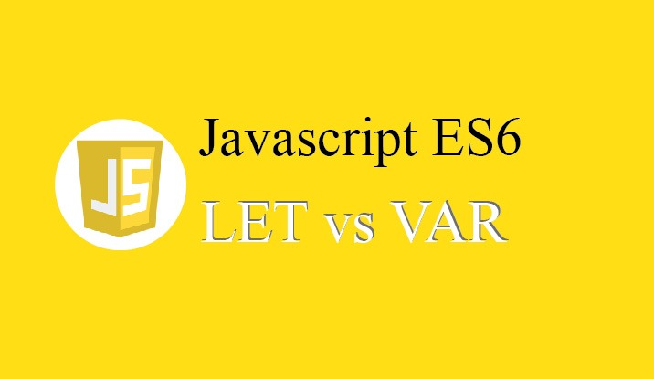

-

So sánh sự khác nhau giữa Let và Var
Tại sao lại cần tới let và const dù trước đó đã có var để khai báo biến, thì ở bài viết này là lý do của từng kiểu khai báo biến. -
So sánh sự khác nhau giữa slice - substring - substr
Hàm substr() và substring(), slice() đều là hàm cắt chuỗi trong Javascript. Nhưng mỗi hàm lại có công dụng và hành vi riêng của nó. -

Tìm hiểu về Moment JS
Moment.js là một thư viện mạnh dùng để thao tác xử lý datetime trong javascript. Moment.js được thiết kế hoạt động trong cả browser và Node.js